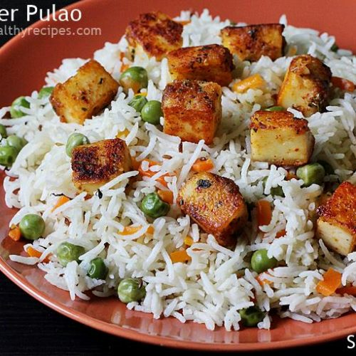
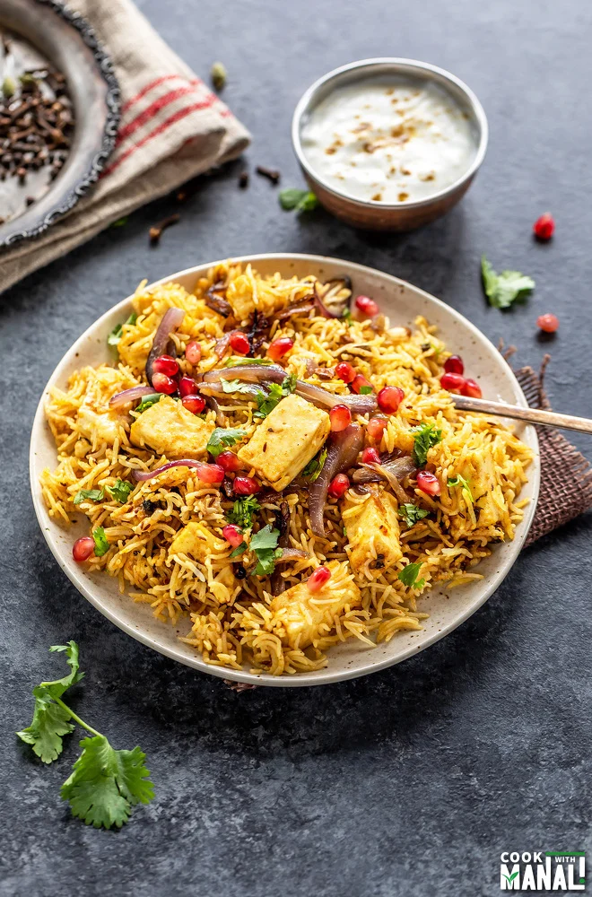

Paneer pulao is a fragrant, delicious and mildly spiced paneer rice dish made with freshly ground pulao masala, basmati rice, onions, spices, herbs and paneer (Indian cottage cheese). This freshly made pulao masala brings in a lot of flavors and makes it taste top-notch than your regular pulao. Make this easy paneer pulao for your weekend lunch or dinner.
Veg Paneer Dum Biryani with detailed photo and video recipe. An easy and simple dum style cooked biryani recipe made with marinated paneer cubes and long grain rice. This is a perfect vegetarian biryani option for non-meat eaters or for paneer lovers. This recipe is easy to make and can be easily served for an afternoon lunch box or a late-night weekend dinner.
